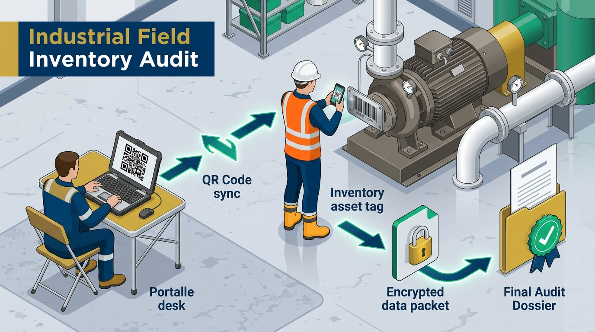

Guía visual a prueba de errores para directores, jefes de proyecto y brigadistas. Desde la llegada a planta hasta la entrega del informe.

Ecosistema Soberano SGAF-V&S v5.3: Laptop Supervisor (Hub QR Offline) ➔ Celular Brigadista (Captura PWA + Serie Fabril DNI) ➔ Paquete Cifrado (.vyspack) ➔ 7 Entregables Periciales en 1 Clic.
Abre la laptop, crea el operativo y genera el Código QR de la brigada.
El brigadista escanea el QR con su teléfono, pone su DNI y crea su PIN.
Pega etiqueta física, copia la Serie Fabril y toma foto con GPS (100% offline).
A las 17:00 presiona "Enviar por WhatsApp" o sincroniza por Wi-Fi. Listo.
Las descripciones cambian, pero la Serie de Fábrica nunca. Búscala siempre en la placa de metal del motor o chasis. Si es vehículo, usa la Placa.
El teléfono guarda todo en su memoria interna. Puedes estar dentro de un socavón minero o galpón cerrado y funcionará sin interrupciones.
El brigadista no ve precios ni listas contables del cliente. Al terminar el día, el celular se limpia y no queda ningún dato comprometido.
Configuración del operativo y emisión de carnets QR para el equipo.
iniciar_hub_brigada.bat.
http://localhost:8765/supervisor. Escribe la clave de 8 caracteres que sale en la consola negra.
BRIG-01) y el rango de etiquetas físicas que le vas a entregar (ej. del AF-0001 al AF-0500).
No se instala nada de Google Play ni App Store. Solo se abre en el navegador.
Cómo pegar la etiqueta y dónde encontrar el DNI del activo.
AF-0001) y presiona "Escanear Plaqueta". El celular pitará al leerla.
SN-481029-X). Si es vehículo, escribe la Placa (ej. ABC-123).
AF-0002).
Cómo enviar los datos al supervisor y limpiar el teléfono de forma segura.
.vyspack y se envía al chat de gerencia. Nadie en el camino puede abrirlo porque tiene cifrado militar.
Respuestas rápidas para resolver cualquier duda en el momento.
| ¿Qué pasa si...? | ¿Qué debes hacer? |
|---|---|
| ¿Se va la señal de internet o no hay datos? | Absolutamente nada. El sistema funciona 100% desconectado. Sigue escaneando y guardando normalmente; todo se guarda en la memoria del teléfono. |
| ¿La máquina está sucia o con grasa? | Limpia siempre la superficie con un trapo antes de pegar la etiqueta para que no se caiga. |
| ¿La serie de la máquina está raspada o ilegible? | Marca la casilla "Serie Ilegible" y toma una foto de cerca a la placa dañada para sustento pericial. |
| ¿La pantalla se apaga o la cámara se suspende? | Es el Modo Eco-Batería para que no se gaste la batería de tu teléfono. Toca la pantalla y se vuelve a encender al instante. |
| ¿Cierro la pestaña del navegador por error? | El Guardián Anti-Pérdida no te dejará cerrar si tienes inventarios pendientes. Vuelve a abrir la página y tus datos seguirán intactos. |
| ¿El cliente pide un informe preliminar urgente? | En la laptop del supervisor, doble clic en GENERAR_ENTREGABLES_Y_ZIP.bat y en 10 segundos tienen el archivo ZIP con los informes. |